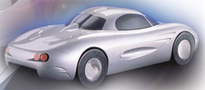
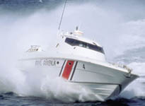
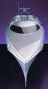
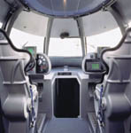
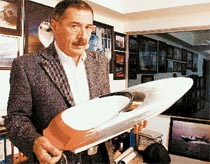

|
Üretimde
ileri kompozit malzeme ve CAD/CAM teknolojileri kullanan Onuk
Taþýt San. Ltd. Þti., yeni tasarladýðý bu aracýn 1:1 ölçekli
çalýþýr durumdaki ilk prototipini bitirmek üzere...
Tofaþ ve Fiat'ýn desteklediði bu proje, Yonca Teknik Yatýrým
A.Þ. ve Onuk Taþýt San. Ltd. Þti. ortaklýðýyla kurulan Yonca-Onuk
A.O. (Joint venture) tarafýndan yürütülmektedir.
Bu kapsamda S56 ve Sazan adýnda iki spor otomobil üretilecektir.
Saðda, S56 isimli otomobilin 1/4 ölçekli bir maketinin fotoðrafý
görülmektedir.
Bu otomobillerden yýlda 50 adet üretilmesi planlanmaktadýr.
S56 tipinde 1600 cc gücünde Fiat Palio motoru, ortadan motorlu
olacak Sazan tipinde ise 2000 cc gücünde Fiat Marea motoru
kullanýlacaktýr.
Otomobillerin tasarýmýnda CATIA V5 kullanýlmaktadýr.
Ýlgili Link: www.onukcars.com
Ýrtibat: Demir
Sümer, Proje Geliþtirme Sorumlusu.
Yonca
Teknik Yatýrým A.Þ. Hakkýnda:
Yonca Teknik Yatýrým A.Þ. 1986 yýlýnda kurulmuþtur. Tersane
Tuzla - Ýstanbul'da olup 3400 m2 kapalý alana ve 1600 m2 ýsý
kontrollu havalandýrma sistemli kompozit üretim atölyelerine
sahiptir. Tersane, 35m boy ve 150 deplasman tona kadar büyüklükte,
ileri kompozit malzemeden, yüksek süratli bot üretim kapasitesine
sahiptir. 1989 dan beri, ileri kompozit, State-of-the-art yatlar,
ticari ve askeri tip tekneler, dizayn ve inþa edilmektedir.
Tersanede üretim, AQAP Kalite Güvence Sistemine tam uyumlu olarak
yapýlmakta ve mühendislik ve gemi inþasý, Det Norske Veritas
(DNV) klaslama kurallarýna ve denizcilik standartlarýna uygun
olarak yürütülmektedir. Ýleri kompozit bot üretimindeki tecrübe,
uzay ve havacýlýk endüstrisi ile yakýn iþbirliði içerisinde
kazanýlmaktadýr.
MRTP
(Multi Role Tactical Platform - Çok Amaçlý Taktik Platform)
KONSEPTÝ:
Çok Amaçlý Taktik Platform (MRTP) konsepti, Kaan-Ekber Onuk
tarafýndan yaratýlmýþ ve geliþtirilmiþtir. ONUK MRTP (Çok Maksatlý
Taktik Platform) programý hedefleri; ileri kompozit malzeme
ve ileri teknolojileri kullanarak, çok maksatlý taktik platform
(MRTP) konseptini geliþtirmek ve kanýtlamak doðrultusunda; Maliyeti,
Tekne büyüklüðünü, Mürettebat sayýsýný, Tesbit edilebilme imkanýný
AZALTIRKEN , Menzili, Görev/Silah yükünü, Hýzý, Sýð sularda
hareket kabiliyetini, Güvenilirlik/Göreve hazýr olma/Bakým kolaylýðýný,
Modülerlik ve Konfigürasyon deðiþtirme özelliðini ARTTIRMAKTIR.
YÜRÜTÜLMEKTE
OLAN PROJELER:
Yonca - Onuk Ortaklýðý, Türk Sahil Güvenlik Komutanlýðý ihtiyacý
doðrultusunda, "Kaan15" Sýnýfý ONUK MRTP15 Ani Müdahale
Botlarý ve "Kaan29" Sýnýfý ONUK MRTP29 Sahil Güvenlik
Botlarýnýn üreticisidir.
ONUK
MRTP15 PROJESÝ ("Kaan15" Sýnýfý):
Savunma Sanayii Müsteþarlýðý (SSM) tarafýndan, Sahil Güvenlik
Komutanlýðý ihtiyacý için, 1997 yýlýnda açýlan uluslararasý
ihale sonucu, "Ani Müdahale Botu Projesi" kapsamýnda
þu ana kadar, her biri 6 botluk üç paket halinde, toplam 18
adet bot imal edilmiþ ve 18 adedinin de kesin kabulü (Geçici
teslimden itibaren 12 ay süre ile kullanýmý müteakip yapýlan
iþlem) tamamlanmýþtýr. Ayrýca iki adet ONUK MRTP15 Ani Müdahale
botu 2002 yýlý içerisinde üretilerek yurtdýþý pazara ihraç
edilmiþtir.
ONUK
MRTP29 PROJESÝ ("Kaan29" Sýnýfý):
1998 yýlýnda sonuçlanan uluslararasý ihale çerçevesinde, Savunma
Sanayii Müsteþarlýðý, Sahil Güvenlik Komutanlýðý için, Yonca
- Onuk Ortaklýðý'na, 10 adet 90 tonluk Sahil Güvenlik Botu
sipariþ etmiþtir. Bu kapsamda Kasým 2002 tarihi itibariyle
beþ adet "Kaan29" Sýnýfý ONUK MRTP29 Sahil Güvenlik
Botu, teslim edilmiþ olup diðer botlarýn inþasýna devam edilmektedir.
Bu iki proje, Milli Savunma Bakanlýðý bünyesinde yürütülmekte
olan ve tamamen Türk Dizayný / Türk imalatý olan projelerdir.
ONUK
MRTP33 PROJESÝ:
ONUK MRTP33, ONUK MRTP29'un, Türkiye ve dünya pazarýnýn gelecekteki
teknik ve taktik ihtiyaçlarýný aþabilmek amacýyla, daha fazla
görev yükü ve daha iyi denizcilik özelliklerine sahip, uzatýlmýþ
versiyonudur. ONUK MRTP33, görev esnekliði ve operasyonel güvenilirliði
için, CODAG tahrik sistemine sahip olacaktýr. ONUK MRTP33 Botu'nun
mühendislik çalýþmalarý ve kompozit malzeme kalýp iþlemleri
tamamlanmýþtýr. ONUK MRTP33, farklý müþteri ihtiyaçlarýna göre,
çeþitli konfigürasyonlarda inþa ve teslim edilebilir.
MRTP
AÝLESÝNÝN YENÝ FERTLERÝ:
MRTP (Çok Amaçlý Taktik Platform), 13 metreden, 38 metreye
kadar büyüklükteki tekneleri kapsayan, MRTP süratli bot ailesi,
en zor koþullarda, çeþitli taktik görevleri baþarabilecek,
çok amaçlý platformlar serisi ihtiyacýna cevap verebilmek
üzere geliþtirilmiþtir. Çok yüksek sürat, üstün manevra yeteneði,
mükemmel denizcilik ve sýð sularda harekat özellikleri ile
MRTP Botlarý, kara sularý ve denizdeki ekonomik bölgenin kontrolü
için ideal çözümdür. Ýhtiyaca göre deðiþtirilebilen tasarým
sayesinde, en zor askeri ve sivil hizmet görevlerinin icrasý
için gerekli olabilecek, çeþitli keþif, gözetleme, kurtarma
ve silah sistemlerinin montesi mümkündür. Geliþtirilmiþ kompozit
yapý, azaltýlmýþ iz seviyesi, çok düþük bakým ve idame masrafý
ve uygulamada büyük esneklik gibi imkanlar saðlamaktadýr.
|
YONCA
TEKNÝK YATIRIM A.Þ. TERSANESÝNDEBU GÜNE KADAR ÜRETÝLEN
TEKNELER |
|
Sýra
No |
Tekne Modeli / Adý |
Deplasman
(Tam yükte) |
Teslim
edilen miktar |
Teslim
edilen kurum/kuruluþ |
|
1 |
YONtech
45 |
13
ton |
4 |
Özel
sektör |
|
2 |
YONtech
105 |
98
ton |
1 |
Özel
sektör |
|
3 |
"Kaan15"
sýnýfý ONUK MRTP15 |
19
ton |
18 |
MSB
SSM/Sahil Güvenlik Kom. |
|
4 |
ONUK
MRTP15 |
19
ton |
2 |
Yurtdýþý
|
|
5 |
"Kaan29"
sýnýfý ONUK MRTP29 |
96
ton |
5 |
MSB
SSM/Sahil Güvenlik Kom. |
Ýrtibat:
Orhan Gençer, Pazarlama Müdürü
YONCA-ONUK A.O.
Tersaneler Caddesi 50/3 34940 Tuzla - Ýstanbul
Tel : +90 (216) 392 99 70 Fax: +90 (216) 392 99 69
Web sitesi : www.yonca-onuk.com
E-Posta : yonca-onuk.mark@superonline.com
Ek
Bilgi > "Dünyanýn en hýzlý yatý"nýn tasarýmlarýný
bitiren Ekber Onuk iddialý: Bu yatla Ýstanbul'dan, Kuþadasý'na
4 saat 40 dakikada gidilecek:
Dünya
çapýnda motor yatlarý ve hücumbotlar üreten Tuzla'daki Yonca
Onuk Tersanesi, þimdi de 36 metrede dünyanýn en hýzlý yatýnýn
inþasýna hazýrlanýyor. Tersane, ayrýca yakýnda güdümlü füze
atabilen 33 metrelik bir hücumbotun da yapýmýna baþlayacak.
Bu hücümbotun bugüne kadar üretilenlerden daha yetenekli,
küçük ve büyük silah yükleriyle dünya liginde ilk sýraya yerleþmesi
planlanýyor.
Tasarýmý
biten 36 metrelik süper yatýn hýzýnýn 55 knot (saatte yaklaþýk
101 kilometre) olacaðýný anlatan Yonca Onuk Tersanesi'nin
sahibi Ekber Onuk þunlarý söyledi: "Dünyada bu metrede
en hýzlý yat, 45 knot hýz yapabiliyor. Bir knot, saatte bir
deniz mili (1.852 metre) hýz anlamýna geliyor. Biz bu yatla
bu hýzýn üzerine çýkacaðýz. Bu yatla Ýstanbul'dan Kuþadasý'na
4 saat 40 dakikada gidilebilecek."
'Onuk
MRTP 33' adýný verdikleri hücumbotun ise 60 knot'un üzerinde
hýz yaptýðýný ve bunun NATO standartlarýnýn çok üzerinde olduðunu
anlatan Onuk, "Bu hücumbot, teknolojik üstünlüklerinin
yaný sýra lüks donanýmý, yüksek standartlý konforu, performansý,
güvenilirliði ile de bir prestij yat olacak" dedi.
Tasarým
mühendisi olan oðlu Kaan'ýn ölümünden sonra onun adýný yaþatmak
için ürettiði botlara "Kaan" adýný veren Ekber Onuk,
ayrýca tersanede Tofaþ'ýn desteðinde S56 ve Sazan adýnda
iki spor otomobil üretecek.
Onuk,
bu otomobillerden yýlda 50 adet üreteceklerini belirterek
þunlarý söyledi:
"Üretim ayný zamanda eðitim amaçlý da olacak. Üretimde
Endüstri Meslek Lisesi öðrencileri de görev alacak. Otomobil
sektörü için insan yetiþtireceðiz. S56 tipinde 1600 cc gücünde
Fiat Palio motoru kullanacaðýz. Sazan tipinde ise 2000 cc
gücünde Fiat Marea motoru. Sazan ortadan motorlu olacak."
Ref:
www.nethaber.com/haber/haberler/0,1082,67485_7,00.html
19/11/2002
Ek
Bilgi > Ekber Onuk ile yapýlan Bir Söyleþiden Alýntýlar:
Aþaðýdaki
yazý , Sahil Güvenlik Komutanlýðý'nýn 90 tonluk hücumbot ihtiyaçlarýný
ulusal çözüm yaklaþýmýyla gerçekleþtiren Yonca-Onuk ortaklýðýnýn
Yönetim Kurulu Baþkan Yardýmcýsý Ekber Onuk ile yapýlan
ve 1/2001 sayýlý Savunma ve Havacýlýk Dergisi'nde yer
alan bir söyleþiden alýnmýþtýr:
...Epey çekiþmeli ve tüm dünyanýn katýlýmýna açýk zorlu bir
uluslararasý rekabet sonucunda, ulusal bir tasarýmý benimseme
ve ayný tasarýmýn yine ulusal bir altyapý kabiliyeti tarafýndan
hayata geçirilmesini onaylama cesaretini gösterdi Türkiye.
Ve bu cesaretin ne kadar yerinde olduðunun en büyük göstergesi
ise bütün testleri baþarý ile tamamlayarak, teknik gereksinimleri
misliyle yerine getiren bir çözüme kavuþan kullanýcýnýn belli
etmemeye çalýþtýðý iftiharýnda gizliydi.
.Tasarým mühendisliði zevkli olduðu kadar da zahmetli bir
yoldur. Baþarý ancak çalýþma, inanç, sabýr ve ýsrarla saðlanabilir.
Çok baþarýlý projelerde bile, geriye dönüp baktýðýmýzda birçok
acýnýn derin izleri görülür, bunlara göðüs gerebilmek kolay
deðildir. Ama ne olursa olsun, "bunu biz yaptýk"
diyebilmenin tadý her þeyin üzerindedir. Tasarýmýný kendiniz
yapabiliyorsanýz dýþa baðýmlýlýðýnýz en alt düzeye gelmiþ
demektir. Memleketimizin, bilhassa bugün, buna çok ihtiyacý
vardýr.
Ulusal kaynaklý tasarýmlarý, amaçlarýna en büyük engel olarak
gören yabancý ürünleri/tasarýmlarý pazarlayarak kolay kazanç
elde etmek gibi kýsýr hedefleri güdenler, bilgi eksikliðinden
doðan yabancý hayranlýðýný ve baþarýsýzlýk korkusunu alevlendirerek
bu sürecin önünü kesmeye çalýþmýþlardýr.
.Ulusal kaynaklý tasarým, bu sancýlý doðuma raðmen artýk kendini
kanýtlamýþtýr. Konumuz olan savunma sanayinde yazýlýmdan mamule
kadar birçok ciddi ürünün bilinçli alýcýlar tarafýndan kendi
güçlerimiz için seçilmekte oluþu, bunun en önemli göstergesidir.
Türk savunma sanayinin ihtiyacý olan en büyük destek de ulusal
tasarýmlarýn ulusal güçler tarafýndan kullanýldýðý referansýdýr.
SÝNERJÝTÜRK-SAVUNMA’08 Sunumlarý > www.sinerjiturk.org.tr/sunumlar_savunma08.asp |